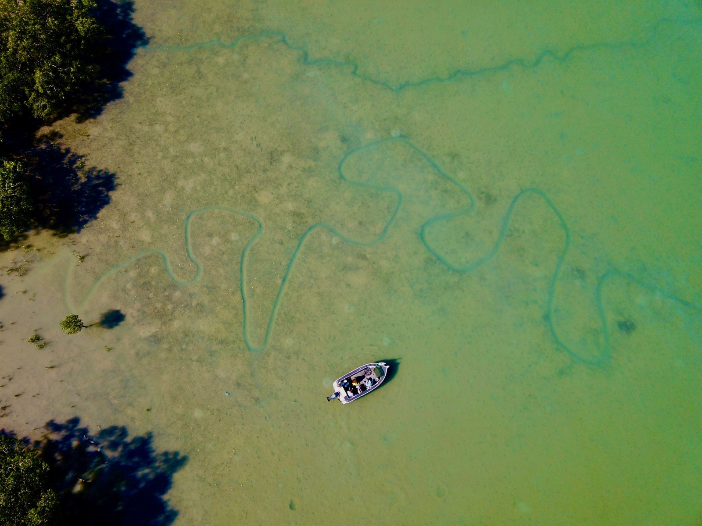

Bag a Barra, Oz Off Road Radio · 3AW / Nine Radio
Bag a Barra — 27 November 2026
Friday 27 November 2026
Bag a Barra, Oz Off Road Radio · 3AW / Nine Radio
Friday 27 November 2026


Listen · 13 min
Originally broadcast on 3AW / Nine Radio. Listen on the Bag a Barra, Oz Off Road Radio.
It's time to head to the Top End and Bag a Barra with Glenn Watty Watt. Thanks to Barefoot Fishing Safaris and Uniden, for the best in UHF radio communications. Explore the extract series at uniden.com.au. Well, he's on the boat.
He seems to be on the boat every time we talk to him lately. I'm not sure where he is, but he's in the boat and he's on the water, unless he's just sitting on the trailer, which you'd never know with Watty. Let's find out. Watty.
How are you, son? Where are you? Oh, yeah, you're right, mate. We are on the water.
Actually, not far away from where I spoke to you last week, actually. So we probably end up out there pretty shortly. Can you go somewhere different? Yeah, well, I mean, we go back to the good spots, mate.
That's part of the deal around here. So, um, yeah, we're getting stuck into a few of these queenies and Trevalles and stuff this morning while the tide's high and then we'll follow that same routine, go and see if we can jag it back. It's the last day of the guided fishing season for me today. So, um, it's nice to finish off with a nice big barra.
Christmas party. What's happening with the Barefoot Fishing Safaris Christmas party? Yeah, well, we'll be flat out into Christmas parties every day from now on, of course, now that I'm more available, as you know. Yeah, yeah.
Well, they start in what, July, don't they up there? Yeah, usually halfway through July, yeah. Yeah, yeah, the Christmas party. You get Christmas in July.
for the back half of the year there. the Christmas parties and all that. Well, mate, anyway, so what, so the Barefoot Christmas party. I mean how many people go to that?
Well, we used to do a big, um, do quite a big Christmas party, actually, when I was doing a lot more radio stuff up here, um, with the, um, local fishing radio up here, and we'd have 50 or 60 people there, chuck a couple of 100 over the bar at the ski club, mate, and have a good time. But yeah, I haven't actually got plans to do one at the moment this year, probably should get that organised. Well, I was as big here as me, my young bloke, the dog. Yeah, that's right. Yeah, well, that might be what Barefoot one used to.
Yeah, well, I don't know. I mean, it's a Christmas party every day. You don't worry about that or some sort of a party. Anyway.
God who knows? So mate, you're there. So when you say, it's the last official, so this is for all fishing guides, or it's like a, or just you, this your last day out, or does everyone sort of switch off now and you start, you know, getting into the wet season and kicking back and refreshing and cocking all the gear up? Yeah, well, no, just for me, there's no official end to a season, really.
Um, there's plenty of um, plenty of the boys will go right through and just um, keep doing the odd trip here and there for local groups or families that come up to see locals um, over Christmas and stuff but I like to have a hard stop at the end of November and that gives me a chance to pull a boat off the trailer and give, give everything a birthday. I'll paint the trailer every year, a bit of maintenance and that sort of thing. So, as well as having a bit of brake, mate, and spending time with the family, and of course, going for a fish myself too. It's been a big year for you, hasn't it really? I mean, you've done a few overseas trips.
that real big one not long ago. And then obviously all the local stuff. I mean, so you've been pretty, you've been fairly active, even full on, really. Yeah, it has been a big year, mate.
If you look back at the calendar, there wasn't too many spare days, so, um, but that's the way we like it and it shows that the business is going well and people are enjoying what we're doing. So, we try and refine that every year and, you know, go back and have a look at the um feedback we get from everyone and and make it, make some changes if we can for next year and look back into it. Yeah, no, fair enough mate. And what about any other spots up there?
got any mail like all your other haunts that you head to and fishing holes? I mean, what's doing around the whole place up there? be fairly busy. Yeah, well, I mean, we're getting this real glass off conditions the last week or so here with big afternoon storms sort of later in the day, actually, which is perhaps a bit better for us as far as our fishing goes.
So, yeah, we've been able to explore spots that we don't really get to do too much throughout the year, especially on the tide we're on today is a.02 or 0.2 down from about 6.5 metres. So there's not a hell of a lot of water left in the harbour when it goes that low, mate, and it gives you access to the fish. They're all a bit more condensed. So, the idea is to try and find them over that low tide and have a crack down.
We had a bit of trouble in the last couple of days. I think it, we've had an extreme heat wave, so the water tent might be actually getting up a bit high for them to be right up in the shallow. So we can try a couple of different things to Sabo and see what happens. Yeah, no, fair enough, mate.
That's all right. And any more tag fish being caught over the last week or so? I've been... Maybe at least one, yeah.
Young fellas only, what is he, grade 5, I think, at school. Um, up in the freshwater section of the Adelaide River, um, yeah. I heard the yarn the other day on the radio, they'd, um, pulled him up a pretty steep bank and noticed it had a red tag and then the fish got off the lure. They didn't have a net or anything and started flapping down the bank and you can imagine the scurry to jump on it and not let it get back into the water once you realised that a tag on it.
So what do you get there, but what, 10 green? Yeah, you'll get 10, mate. Yeah. It's actually good to see him still being caught at the moment.
Often in previous years when it starts raining a bit. The catch rates of the tagfish go right down. So, yeah, if they can keep pulling one every couple weeks, that would be good. Is that grade five?
What's that up there? How old would he be? Um, grade 5? 11, 12 or something? Oh, yeah, 10 or 11.
And he's, ah, you'd imagine the new pushbike he's buying. Mate, yeah, good Christmas present. eh? 10 grand.
Oh, good on him. Well done. I mean, I mean, you could imagine, just imagine that fish flapping its way back towards the water with $10,000 tag on its back. Oh, you, mate.
Yeah, you'd be running. you'd be scouring, you'd be into it, wouldn't you? Well, good on him. I mean, like, anyway, hope he gets to spend it all on himself.
It's not bad pocket money for a little bloke. Yeah, you'd probably have to buy the old man. old man, a box of cans were taking him out there, I suppose, and it sounded like they had a crocodile jump out of the water close by him just previous to it too. So I think they're a bit sketchy. too close for the water.
I'm here, mate, like we keep saying, they keep moving around this time of year and get a bit more active, so you never know you've got to be real careful. Yeah, I was going to say that too. You want to be careful getting that fish because obviously we're up there where there's water. There's crocs.
Yeah, that's right. And the Adelaide River is the 2nd highest density of saltwater crocs, definitely in Australia and potentially the world. So, yeah, there's plenty of them around there, mate, and of course, that's where they do the jumping crocs there too, so they do it, they get a bit of practice around the back river. Is the Proserpine River up in Queensland?
the number one? Oh, I have heard that. No, for what I understand, the Mary River at Shady Camp, which is part of Corroboree Billabong is the highest density. Yeah, it's like 12 or 15 crocodile, adult clocks per kilometre is how they measure it.
Yeah, and Adelaide's sort of only a couple less than that. I heard that on the jumping crops to about this time last year, actually. Because I know we did a thing on a tour at Proserpine, and oh, mate, the guide was saying that the Proserpine River was the number one, but obviously, I would have thought the somewhere in the territory would have been. But anyway, so you've just corrected that and...
Well, maybe, yeah. I mean, everyone probably likes to claim it too. Yeah, I know. The underlying story is that there's plenty of them around, so you've got to be careful. Although Prosser Point River's up near Ellie Beach.
I mean, mate, it runs straight. I mean, anyway, you've got to be careful, haven't you? With these things? I mean, they're all over there. and they are moving about a bit too.
I mean, I've seen a few videos where they're basically swimming under bridges where there's traffic driving over them. Yeah, yeah, sure. I mean, any bridge over river up here's got is going to have crocodiles in it. Basically a good rule of thumb anywhere, you'll find barramundi, you'll find crocodiles.
So, yeah, it's something to be really mindful of. Yeah, absolutely. All right, mate. So the fish are biting today, and I noticed you haven't caught one while you've been talking to us this week, which is a bit of a disappointment.
Yeah, last week I was a bit busy, wasn't I? I was saying, I might need to get a lanyard hang around me neck so I can just keep the phone going, but no, we're a little quite back at the moment. We'd just come from a heap and we're heading out to that spot where we were yesterday last week, probably next if we don't get anything here, so. Yeah, no, fair enough. All right.
Well, then the buildup continues, some big storms, which is, I know you love, so that's all good, and obviously it's just going to get bigger and bigger as it goes. And I, mate, I think I'll be seeing you soon, mate. You coming down these parts? That'll be good.
Look forward to that. Yeah, that's right. Um, less than 30 sleeps now until I'm down that way and picking up, which I'm really excited about, mate. As long as there's still some rubber on the tyres and stuff after spend a month at your joint.
Hang on a second. Can someone wash that car of watties? I went through some mud and some of that black stuff the other day, that black mud? Just give it a clean for me, will you?
He's coming back to get it. Yeah, sorry, Watty. just fix that up, mate. Hey, listen, now, look, just before you go, you've got your own brand of fishing rods that are going that are about to hit the online store, mate, just give that a bit of a plug if you want.
Yeah, that's pretty exciting project for me. You know, with all the travel that we do as well as guiding for the last 16 years up here. I've got a pretty specific requirement for rods that I'm looking for these days and um, yeah, spent the last couple of months testing out some prototypes we got made and um, yeah, there's 200 rods sitting in Darwin at some depot somewhere ready for me to pick up when we get off the water today and then um, yeah, they'll be on the online store, have a big launch around over this sort of period when everyone's doing these sales and stuff, I suppose. So join in on that and yeah, get some people into some real quality gear. And the best thing about these, mate, is they're a 4 piece.
They come in a nice soft bag, so you can put it behind the seat of the Ute or in the caravan, and they come with a spare tip as well. So if you do happen to break one after a couple too many tins, when you catch a $10000 barra, then you can still keep fishing, no harm done. So what are they called? Barefoot?
What are they called? Yeah, so this one, this model's called the walkabout. So the older Marod for going off on walkabout all around the world or across the territory? Well, they Barefoot brand and then that's the model.
Is that right, or? right, mate. Yeah, yeah. So we tried to come up with the most versatile one within a range for the 1st iteration and then we'll expand the range as we get things going.
So it's exciting project. Yep, good stuff, mate. All right. Well done.
And we'll tell people how they can get those. So the Barefoot fishing rod, the walkabout model. So we'll be available soon, which is fantastic, and others. I mean, it's a, yeah, as you move into the online retail space, mate.
Well done. radio and get me off the water a bit more and into out of this bloody sun, mate. It's been an extreme heat wave up here for about the last 2 weeks. So looking forward to some air con time actually.
Yep, all right, mate. Sounds good mate. All right, well done. And we'll tell people about those rods as well, which I think it's a great idea. And the fact that you've actually thought of even a spare tip because you know that obviously you've broken a few in your day with Cairns, so obviously that can be done.
So that's why you've thrown that in. Think of everything, buddy. Well done, mate. Yeah, well, it does happen, mate.
And most of the time it's not when you're actually fishing. It's transportation. Oh, here we go. Oh, yeah, or in the ceiling fan, and, you know, when you're playing around with them at home or whatever.
So another, a really unique feature in these 2, that's a nice mangrove jack cult. Nice job mate. Yeah, is the baked cast and spin model, the tips are actually interchangeable as well, which no one else does to my knowledge. So, you actually, you've got 2 rods, you've got 4 tips.
So you've got plenty of room for stuff-ups. Yeah, good stuff mate. Well, that's what your mate. old book.
That's annoying. Well done. Oh, he's in. Hes on. Hes on.
Well, I don't know if you need a few of them, but I have a lot of stuff ups, mate. What I'm fishing, as you know. All right, mate. Well, we'll let you get, we'll let you get that mangrove Jack into the net and into the boat and we will... before we crash into these rocks too.
And we'll have a arm with you next week, eh? See what you're up to. Right on, mate. Good on you.
Good on you. There he is. That our man, Glenn Watty, what? Fishing, and he's got one. How good is it?
He normally gets them while we're talking to him. He's got one just before. Well, you know, he mulch you to turn him down there, Mulchy. just body down? That'd be that'd be handy.
So anyway, we um, we love to get him when he's out there fishing because he always seems to get one or 2 and you want, George, at the very end of the conversation, he got one. How good is that? Barefoot Fishing Safaris, be sure to check him out and be sure to check out those new fishing rods designed by Watty, tested by Watty, and certainly help you guarantee you to jag in those big barrels. He certainly caught plenty in his day.
He knows what Roger needs for it, and he's designed his own. How good's that? So check it out, the Barefoot range of fishing rods there and check him out, Barefoot Fishing Safaris, especially if you want to plan that big fishing trip in the Top End next year.